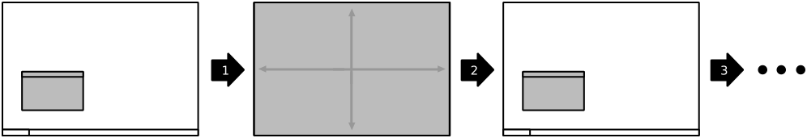
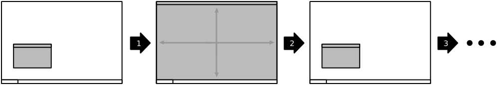

Command Reference
NOTE: All commands may have keybindings added, changed, or removed and this listing represents default values.
Window Tiling
top-left (Ctrl+Alt+Keypad 7)- Tile the active window to span the top-left quarter of the screen. Press the hotkey multiple times to cycle through different width presets.

top (Ctrl+Alt+Keypad 8)- Tile the active window to span the top half of the screen. Press the hotkey multiple times to cycle through different width presets.

top-right (Ctrl+Alt+Keypad 9)- Tile the active window to span the top-right quarter of the screen. Press the hotkey multiple times to cycle through different width presets.

left (Ctrl+Alt+Keypad 4)- Tile the active window to span the left half of the screen. Press the hotkey multiple times to cycle through different width presets.

middle (Ctrl+Alt+Keypad 5)- Tile the active window to fill the screen. Press the hotkey multiple times to cycle through different width presets.

right (Ctrl+Alt+Keypad 6)- Tile the active window to span the right half of the screen. Press the hotkey multiple times to cycle through different width presets.

bottom-left (Ctrl+Alt+Keypad 1)- Tile the active window to span the bottom-left quarter of the screen. Press the hotkey multiple times to cycle through different width presets.

bottom (Ctrl+Alt+Keypad 2)- Tile the active window to span the bottom half of the screen. Press the hotkey multiple times to cycle through different width presets.

bottom-right (Ctrl+Alt+Keypad 3)- Tile the active window to span the bottom-right quarter of the screen. Press the hotkey multiple times to cycle through different width presets.

Window Movement
move-to-top-left- Move the active window to the top-left corner of the screen without altering its shape.

move-to-top- Move the active window to the top edge of the screen without altering its shape.

move-to-top-right- Move the active window to the top-right corner of the screen without altering its shape.

move-to-left- Move the active window to the left edge of the screen without altering its shape.

move-to-center (Ctrl+Alt+C)- Move the active window to the center of the screen without altering its shape.

move-to-right- Move the active window to the right edge of the screen without altering its shape.

move-to-bottom-left- Move the active window to the bottom-left corner of the screen without altering its shape.

move-to-bottom- Move the active window to the bottom edge of the screen without altering its shape.

move-to-bottom-right- Move the active window to the top-right corner of the screen without altering its shape.

Window State
Toggling whether the active window is rendered...
always-above- ...on a layer above normal windows.
always-below- on a layer below normal windows.
bordered- ...without a titlebar and borders.
fullscreen- ...fullscreen, covering desktop panels and, on many compositors, with un-redirected rendering for improved performance.
- 
horizontal-maximize (Ctrl+Alt+H)- ...maximized horizontally, but with its height and vertical position unchanged.
maximize (Ctrl+Alt+Keypad 0)- ...maximized to fill the "work area" of the monitor. (ie. not covering panels unless they're set to allow it.)
- 
minimize- ...minimized to the taskbar or equivalent.
shade- ...as only a titlebar (like a rolled-up windowshade).
vertical-maximize (Ctrl+Alt+V)- ...maximized vertically, but with its width and horizontal position unchanged.
Multi-Monitor Operations
monitor-switch (Ctrl+Alt+Keypad Enter)monitor-next- Move the window to the next monitor, according to the WM's internal numbering. Do not move the window's position within the monitor beyond what the WM may do to adjust for differently-sized monitors.
monitor-switch is a legacy alias for monitor-next retained for compatibility purposes.monitor-prev- Move the window to the previous monitor, according to the WM's internal numbering. Do not move the window's position within the monitor beyond what the WM may do to adjust for differently-sized monitors.
Workspace-wise Navigation
workspace-go-next- Switch focus to the next workspace, by the WM's internal numbering. Do not move any windows.
workspace-go-prev- Switch focus to the previous workspace, by the WM's internal numbering. Do not move any windows.
workspace-go-left- Switch focus to the left in the grid of workspaces. Do not move any windows.
- For users who have laid out their workspaces in a row, this is equivalent to
workspace-go-prev with the possible exception of wrap-around behaviour.
workspace-go-right- Switch focus to the right in the grid of workspaces. Do not move any windows.
- For users who have laid out their workspaces in a row, this is equivalent to
workspace-go-next with the possible exception of wrap-around behaviour.
workspace-go-up- Switch focus upward in the grid of workspaces. Do not move any windows.
- For users who have laid out their workspaces in a column, this is equivalent to
workspace-go-prev with the possible exception of wrap-around behaviour.
workspace-go-down- Switch focus downward in the grid of workspaces. Do not move any windows.
- For users who have laid out their workspaces in a column, this is equivalent to
workspace-go-next with the possible exception of wrap-around behaviour.
Workspace-wise Window Manipulation
all-desktops- Toggle whether the active window appears on all desktop/workspaces
workspace-send-next- Ask the WM to move the active window to the next workspace, according to its internal numbering.
workspace-send-prev- Ask the WM to move the active window to the previous workspace, according to its internal numbering.
workspace-send-left- Ask the WM to move the active window to the left in the grid of workspaces.
- For users who have laid out their workspaces in a row, this is equivalent to
workspace-send-prev with the possible exception of wrap-around behaviour.
workspace-send-right- Ask the WM to move the active window to the right in the grid of workspaces.
- For users who have laid out their workspaces in a row, this is equivalent to
workspace-send-next with the possible exception of wrap-around behaviour.
workspace-send-up- Ask the WM to move the active window upward in the grid of workspaces.
- For users who have laid out their workspaces in a column, this is equivalent to
workspace-send-prev with the possible exception of wrap-around behaviour.
workspace-send-down- Ask the WM to move the active window downward in the grid of workspaces.
- For users who have laid out their workspaces in a column, this is equivalent to
workspace-send-next with the possible exception of wrap-around behaviour.
Miscellaneous Functionality
show-desktop- Ask the WM to toggle the visibility of all windows.
- Be warned that some WMs will forget about this (it will degenerate into a normal "everything manually minimized" state) if you re-show your windows through any means other than triggering this behaviour a second time.
trigger-move- Ask the WM to begin a "keyboard-driven move" operation on the active window.
- Typically, this is handled via the arrow keys.
trigger-resize- Ask the WM to begin a "keyboard-driven resize" operation on the active window.
- Typically, this is handled via the arrow keys.
Special thanks to David Stygstra for the diagrams.